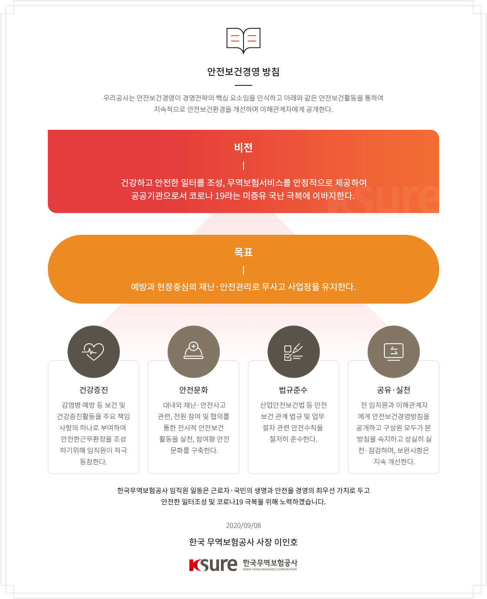
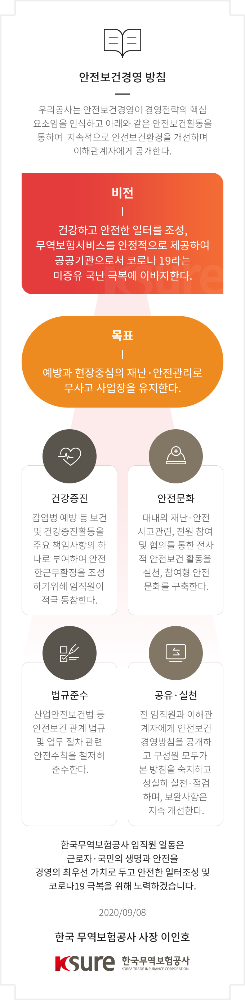

CEO 안전보건경영 방침
CEO 안전보건경영 방침


안전보건경영 방침
우리공사는 안전보건경영이 경영전략의 핵심 요소임을 인식하고 아래와 같은 안전보건활동을 통하여 지속적으로 안전보건환경을 개선하며 이해관계자에게 공개한다.
-
비전
건강하고 안전한 일터를 조성, 무역보험서비스를 안정적으로 제공하여 공공기관으로서 코로나 19라는 미증유 국난 극복에 이바지한다.
-
목표
예방과 현장중심의 재난·안전관리로 무사고 사업장을 유지한다.
-
건강증진
감염병 예방 등 보건 및 건강증진활동을 주요 책임사항의 하나로 부여하여 안전한근무환정을 조성하기위해 임직원이 적극 동참한다.
-
안전문화
대내외 재난·안전사고관련, 전원 참여 및 협의를 통한 전사적 안전보건 활동을 실천, 참여형 안전문화를 구축한다.
-
법규준수
산업안전보건법 등 안전보건 관계 법규 및 업무 절차 관련 안전수칙을 철저히 준수한다.
-
공유·실천
전 임직원과 이해관계자에게 안전보건경영방침을 공개하고 구성원 모두가 본 방침을 숙지하고 성실히 실천·점검하며, 보완사항은 지속 개선한다.
-
건강증진
한국무역보험공사 임직원 일동은 근로자·국민의 생명과 안전을 경영의 최우선 가치로 두고 안전한 일터조성 및 코로나19 극복을 위해 노력하겠습니다.
2020/09/08
한국 무역보험공사 사장 이인호
KSURE 한국무역보험공사